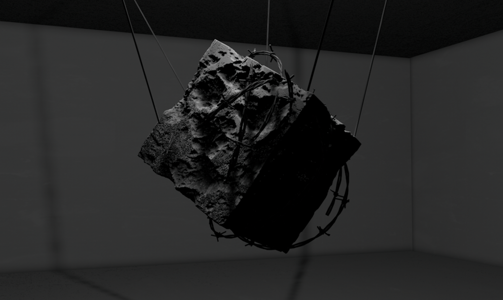
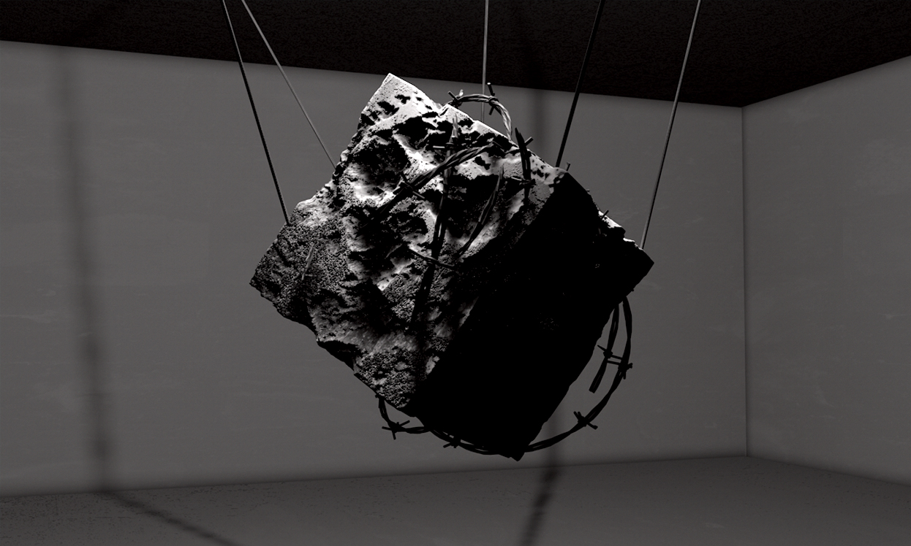
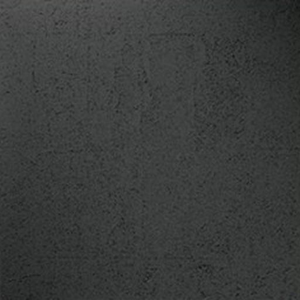
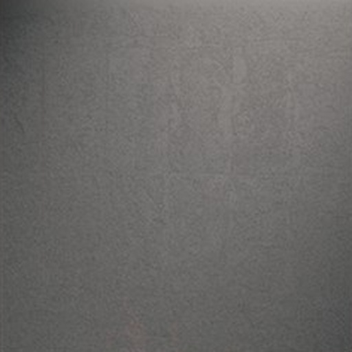
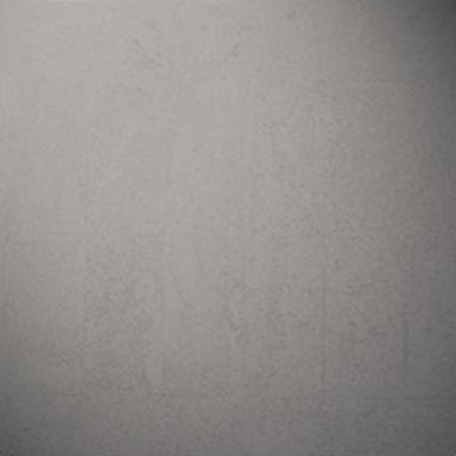
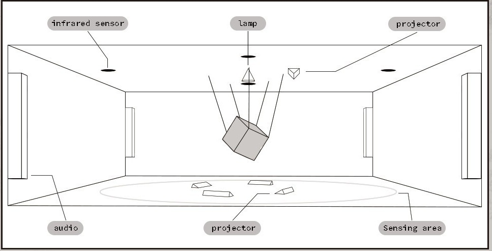
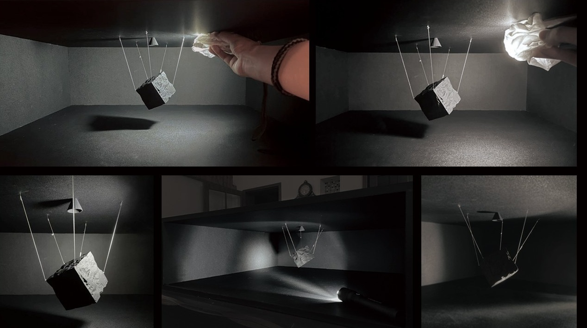

The metaphor
A simple, suspended form carries a complex emotional story. The cube begins unaffected; marks emerge and spread as the audience comes closer.
How does a family environment
leave its marks?
A suspended cube carries the story of childhood: from an unaffected surface to visible traces of pressure and harm.

A suspended cube becomes a portrait of childhood. As the audience approaches, its surface changes: invisible traces of the family environment take physical form.
I created every part of the original project: concept, spatial and interaction design, 3D modelling and rendering, physical prototyping, and proximity-sensor programming. The work was developed as a scale prototype and digital studies. A physical exhibition did not take place due to the COVID-19 pandemic.

Preparing the installation…Stand at the edge of the room. The suspended cube is intact: a blank psychological state, before the family environment leaves its marks.



This browser-based reconstruction presents the intended installation in three material states. Room proportions, suspension and lighting follow my original Cinema 4D scene. Use Forward and Back to explore, or Inspect detail for a closer view.
The cube represents a child’s psychological state. The installation is designed to use projection to turn a plain surface into an increasingly damaged one, asking visitors to reflect on how a family environment can leave lasting marks.
A simple, suspended form carries a complex emotional story. The cube begins unaffected; marks emerge and spread as the audience comes closer.
In the proposed installation, entering the sensing area triggers the projection. As visitors approach, the projected damage increases; leaving clears the surface. Proximity connects the visitor’s movement to the work.
Ropes suggest emotional manipulation, barbed wire corporal punishment, cracks emotional neglect, and a worn surface verbal abuse. Each element gives an invisible experience a visible form.
Three decisions connect the emotional idea to its visual language, proposed interaction and physical prototype.
The cube provides a clear starting form. Against its plain surfaces, wire, cracks and erosion become signs of accumulating pressure. The contrast carries the story from an unaffected state towards visible damage.
The original material studies develop this progression across three states. Together they define a visual language for moving from a clean surface to an increasingly constrained and eroded form.
The proposed installation connects a visitor's presence to the changing surface. Entering the sensing area begins the sequence; leaving allows it to clear. Movement becomes a way of encountering the work.
The room plan locates sensing, projection, light and audio. The accompanying sensor program uses a distance threshold to send an entry or exit signal. This gives the interaction a clear entry and exit, linking the visitor’s movement to the start and release of the sequence.

A resin cube, fishing-line suspension and a wooden room model bring the digital composition into a tangible setting. The prototype places the hanging form, enclosure and directed light in the same space.
Photographs document the model from several positions and show how light and shadow frame the cube. These studies give the atmosphere a physical reference alongside the digital renders.

This later, unbuilt mixed-reality exploration extends the original 2022 project. Spatial renders from the project model distinguish the physical cube from its proposed digital transformation.


An intact cube anchors the room, while a headset reveals its changing digital state.
The project brings an emotional subject into form, space and interaction, with a scale prototype and digital studies as its produced outcomes.
The February 2022 work connects concept, spatial and interaction design, Cinema 4D modelling and rendering, sensor programming and physical prototyping within one independently produced personal project.
A physical exhibition did not take place due to the COVID-19 pandemic. A future installation would evaluate projection and proximity sensing in the venue, visitor movement and how people interpret the material progression.
The browser reconstruction makes the intended progression explorable: visitors can approach the work, move through three material states and inspect the changing surface from different angles.